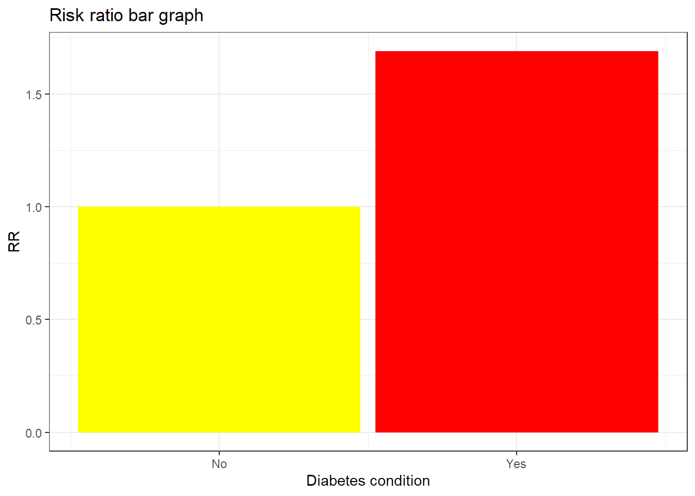

[partly auto-generated file]
Alzheimers is a death cause. It means that there is a certain probability that one dies from this.
Categories
Alzheimers is part of the following death cause categories
Risk factors
In the model Alzheimers has the following risk factors
Number of deaths
In 2014 Alzheimers was responsible for 3.56% of the deaths in the US. Below is a plot of how prevalent the death was for different ages (Xu et al. 2016)
Definition
The definition of dying from Alzheimers is to get any of the following ICD codes as the main cause of death on one’s death certificate. The percentage is the proportion of the deaths from Alzheimers who falls under the ICD code
G30: Alzheimer’s disease (100.0%)
- G300: Alzheimer’s disease with early onset (0.028%)
- G301: Alzheimer’s disease with late onset (2.3%)
- G308: Other Alzheimer’s disease (0.0086%)
- G309: Alzheimer’s disease, unspecified (97.6%)
Source: Xu et al. (2016), (“ICD Order Files 2014,” n.d.)
Interaction
The combined risk ratio of all risk factors is computed using the formula
\[
RR=RR_{\text{Cognitivity}} \cdot RR_{\text{Diabetes}} \cdot RR_{\text{Fish}} \cdot RR_{\text{Vegetables}}
\]
The normalization factor is based on the joint distribution of all the risk factors and is computed using the formula
\[
P=P_{\text{Cognitivity}} \cdot P_{\text{Diabetes}} \cdot P_{\text{Fish}} \cdot P_{\text{Vegetables}}
\]
Cognitive activity
Cognitive activity is a risk factor for Alzheimers.
In the meta-analysis by Yu et al. (2020), it was estimated that cognitive activity could reduce Alzheimers by a factor 0.53. The main paper in the meta-analysis was Wilson et al. (2007), who
- used a scale for cognitive activity that we imitate in the input factor Cognitive activity. Its 10th percentile is 2.2, its 90th percentile is 4.0 and its mean is 3.2.
- assumes the Hazard ratio(HR) has the relationship \(HR(x)=a\cdot \exp(b\cdot x)\) where \(x\) is their definition of cognitive activity.
In the paper by Wilson et al. (2007), they have \(b=log(0.58)\), but we will not use that fact because we have more faith in the factor 0.53. Therefore, ee assume that \(HR(2.2)=1\) and \(HR(4.0)=0.53\) and reestimate \(a\) and \(b\) using the assumption \(HR(x)=a\cdot \exp(b\cdot x)\). That leads to the estimates
\[
b=-0.3527102\\
\frac{1}{3.2-2.2}\int_{2.2}^{3.2} a\cdot \exp(b\cdot x) \text{ d}x=0.8426725\\
\frac{1}{4.0-3.2}\int_{3.2}^4 a\cdot \exp(b\cdot x) \text{ d}x=0.612333
\]
We therefore obtain the risk ratios below
Because the variable Cognitive activity is numeric, we have computed a smoothed approximation.
Diabetes condition
Diabetes condition is a risk factor for Alzheimers.
Yu et al. (2020) estimated that having diabetes increases risk of Alzheimers by a factor 1.69.

Fish consumption
Fish consumption is a risk factor for Alzheimers.
It seems that Omega-3 intake could be the real reason, but the results are not as clear (Wu et al. 2015). We therefore use the fish consumption effects from Wu et al. (2015), where they estimate a minimum risk ratio of 0.64 and a 11% decrease per 100 grams of fish consumed per week. Those numbers indicates a line of exponential decrease from 0 grams of fish at \(RR=1.0\) to \(\log(0.64)/\log(0.89)\cdot 100=382\) grams of fish. Dividing this line into arbitrary segments, we obtain the distrubtion below.
Because the variable Fish consumption is numeric, we have computed a smoothed approximation.
Vegetable consumption
Vegetable consumption is a risk factor for Alzheimers.
Below is a plot of the risk ratios we have taken from the literature (possibly adjusted to fit the model)

Because the variable Vegetable consumption is numeric, we have computed a smoothed approximation.
References
Wu, Shunquan, Yingying Ding, Fuquan Wu, Ruisheng Li, Jun Hou, and Panyong Mao. 2015. “Omega-3 Fatty Acids Intake and Risks of Dementia and Alzheimer’s Disease: A Meta-Analysis.” Neuroscience & Biobehavioral Reviews 48: 1–9.
Xu, Jiaquan, Kenneth D Kochanek, Sherry L Murphy, and Betzaida Tejada-Vera. 2016. “Deaths: Final Data for 2014.” National Vital Statistics Reports 65 (4).
Yu, Jin-Tai, Wei Xu, Chen-Chen Tan, Sandrine Andrieu, John Suckling, Evangelos Evangelou, An Pan, et al. 2020. “Evidence-Based Prevention of Alzheimers Disease: Systematic Review and Meta-Analysis of 243 Observational Prospective Studies and 153 Randomised Controlled Trials.” Journal of Neurology, Neurosurgery & Psychiatry 91 (11): 1201–9. https://doi.org/10.1136/jnnp-2019-321913.